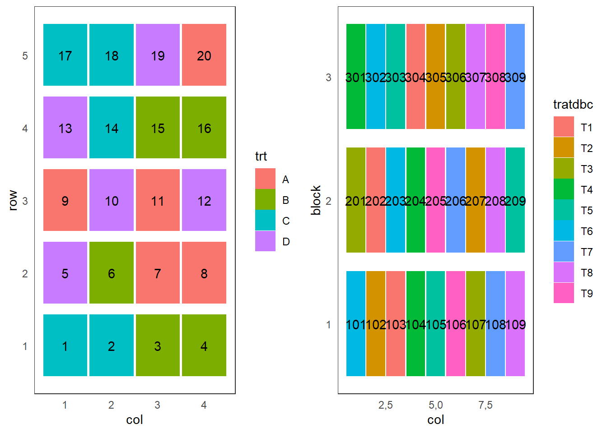

Delinemento em blocos casualizados
Delineamento em blocos casualizados
O delineamento casualizado em blocos (dbc) leva em consideração os três princípios básicos da experimentação: repetição, casualização e controle local. Para realizar o dcb deve-se repartir a área experimental heterogênea e sub áreas homogêneas.
Se cada bloco receber todos os tratamentos chama-se de blocos completos, caso algum bloco não receba todos os tratamentos chama-se de blocos imcompletos.
Exemplo
Um experimento sobre a produtividade de variedades de Coffea arabica será realizado em uma área experimental declivosa, para que o efeito do ambiente não se confunda com a variação do acaso deve-se dividir essa área em blocos para estabelcer a variabilidade do ambiente e assim determinar com maior precisão o efeito das variedades de café.
Croqui e anova: comparação entre DIC e DBC

Modelo estatístico
\[y_{ij} = \mu + b_j + \tau_i + e_{ij},\]
em que: - \(y_{ij}\) é a observação referente ao tratamento \(i\) no bloco \(j\);
\(\mu\) é a constante comum a todas as observações (média geral);
\(b_j\) é o efeito do \(j\)-ésimo bloco, com \(j = 1, 2, \ldots, J\);
\(\tau_i\) é o efeito do \(i\)-ésimo tratamento, com \(i = 1, 2, \ldots, I\);
\(e_{ij}\) é o erro experimental, tal que \(e_{ij}\sim \mbox{NID} (0; \sigma^2)\).
Estimadores
As soluções de mínimos quadrados para os parâmetros \(\mu\), \(b_j\) e \(\tau_i\), com \(j=1, \ldots, J\) e \(i = 1, \ldots, I\), assumindo-se as restrições usuais,
\(\sum_{i}\hat{\tau}_i = 0\) e \(\sum_{j}\hat{b}_j = 0\), são:
\[\hat{\mu} = \bar{Y},\] \[\hat{b_j} = \bar{Y}_j - \bar{Y}\] \[\hat{\tau}_i = \bar{Y}_i - \bar{Y}\]
DBC: quadro da ANOVA
Hipóteses:
\(H_0:\mu_1 = \mu_2 = \ldots = \mu_I\)
\(H_1:\) pelo menos duas médias de tratamentos diferem entre si
Tabela 1. ANOVA
| Causa de Variação | G.L. | S.Q. | Q.M. | F |
|---|---|---|---|---|
| Blocos | \(J - 1\) | SQ Blocos | ||
| Tratamentos | \(I - 1\) | SQ Trat | QM Trat | Fcal |
| Resíduo | \((I-1)(J-1)\) | SQ Res | QM Res | |
| Total | \(IJ - 1\) | SQ Total |
Rejeita-se \(H_0\) se \(F_{cal} \geq F_{tab_{(\alpha, I-1, (I-1)(J-1))}}\), em que \(\alpha\) é o nível de significância, \(I-1\) é o número de graus de liberdade do numerador e \((I-1)(J-1)\) é o número de graus de liberdade do denominador.
Exemplo
Os dados apresentados a seguir foram coletados de um experimento instalado no delineamento casualizado em blocos, cujo objetivo é comparar nove porta-enxertos para laranjeira Valência. Cada parcela era constituída por duas plantas e as produções de laranja (número médio de frutos por planta) tomadas dois anos após a instalação do experimento são:
Tabela 2. Numero médio de frutos por porta enxerto
| Enxertos | I | II | III | Totais | Médias |
|---|---|---|---|---|---|
| Tangerina sunki | 145 | 155 | 166 | 466 | 155,33 |
| Limão rugoso nacional | 200 | 190 | 190 | 580 | 193,33 |
| Limão rugoso da Flórida | 183 | 186 | 208 | 577 | 192,33 |
| Tangerina Cleópatra | 190 | 175 | 186 | 551 | 183,16 |
| Citranger-troyer | 180 | 160 | 156 | 496 | 165,33 |
| Trifoliata | 130 | 160 | 130 | 420 | 140,00 |
| Tangerina cravo | 206 | 165 | 170 | 541 | 180,33 |
| Laranja caipira | 250 | 271 | 230 | 751 | 250,33 |
| Limão cravo | 164 | 190 | 193 | 547 | 182,33 |
| Totais | 1648 | 1652 | 1629 | 4929 |
Somas de quadrados do Total \[\text{SQ Total} = \sum_{ij} y_{ij}^2 - \frac{G^2}{IJ} = 145^2 + 155^2 + \ldots + 193^2 - \frac{4929^2}{27} = 27042,67 \]
Somas de quadrados de Blocos
\[\text{SQ Blocos} = \frac{1}{I} \sum_{j} B_{j}^2 - \frac{G^2}{IJ} = \frac{1}{9}\Big(1648^2 + 1652^2 + 1629^2 \Big) - \frac{4929^2}{27} = 33,55 \]
Somas de quadrados de Tratamentos
\[\text{SQ Tratamentos} = \frac{1}{J}\sum_{i} T_{i}^2 - \frac{G^2}{IJ} = \frac{1}{3}\Big(466^2 + 580^2 + \ldots + 547^2 \Big) - \frac{4929^2}{27} = 22981,33\]
Somas de quadrados do Resíduo
\[\text{SQ Resíduo} = \text{SQ Total} - \text{SQ Blocos} - \text{SQ Tratamentos} = 27042,67 - 33,55 - 22981,33\\ = 4027,79\]
Tabela 3. Quadro da ANOVA
| Causa de Variação | G.L. | S.Q. | Q.M. | F |
|---|---|---|---|---|
| Blocos | 2 | 33,55 | 16,78 | |
| Tratamentos | 8 | 22.981,33 | 2.872,67 | 11,41 |
| Resíduo | 16 | 4.027,79 | 251,74 | |
| Total | 26 | 27.042,67 |
\(F_{(\alpha = 0,05, 8, 16)} = 2,59.\)
Ao nível de 5% de significância, rejeitamos \(H_0\) e concluímos que pelo menos um contraste de médias difere de zero, ou seja, as produções médias de laranja, considerando-se os diferentes porta enxertos, não são todas iguais.
Teste de Tukey
Hipóteses:
\(H_0: \mu_i = \mu_{i'} \Rightarrow \mu_i - \mu_{i'} = 0\) \(H_1: \mu_i \neq \mu_{i'} \Rightarrow \mu_i - \mu_{i'} \neq 0\)
\[\Delta = q_{(\alpha = 0,05, I,\text{gl}_\text{Res})}\sqrt{\frac{\mbox{QM Resíduo}}{J}} = 5,03\sqrt{\frac{251,74}{3}} = 46,08\]
\(\hat{\mu}_1 = 155,33\), \(\hat{\mu}_2 = 193,33\), \(\hat{\mu}_3 = 192,33\), \(\hat{\mu}_4 = 183,67\), \(\hat{\mu}_5 = 165,33\), \(\hat{\mu}_6 = 140,00\), \(\hat{\mu}_7 = 180,33\), \(\hat{\mu}_8 = 250,33\), \(\hat{\mu}_9 = 182,33\)
Tabela4. Valores absolutos das diferenças entre pares de médias de tratamentos
| Médias | \(\mu_2\) | \(\mu_3\) | \(\mu_4\) | \(\mu_5\) | \(\mu_6\) | \(\mu_7\) | \(\mu_8\) | \(\mu_9\) |
|---|---|---|---|---|---|---|---|---|
| \(\hat{\mu}_1\) | 38,00 | 37,00 | 28,33 | 10,00 | 15,33 | 25,00 | 95,00 | 27,00 |
| \(\hat{\mu}_3\) | 8,67 | 27,00 | 52,33 | 12,00 | 58,00 | 10,00 | ||
| \(\hat{\mu}_4\) | 18,33 | 43,67 | 3,33 | 66,67 | 1,33 | |||
| \(\hat{\mu}_5\) | 25,33 | 15,00 | 85,00 | 17,00 | ||||
| \(\hat{\mu}_6\) | 40,33 | 110,33 | 42,33 | |||||
| \(\hat{\mu}_7\) | 70,00 | 2,00 | ||||||
| \(\hat{\mu}_8\) | 68,00 |
Deve-se ordenar em ordem decrescente e letras diferentes revelam diferenças significatisvas
Tabela 5. Resultado do teste de Tukey
| Médias | |
|---|---|
| \(\hat{\mu}_8 = 250,33\) | a |
| \(\hat{\mu}_2 = 193,33\) | b |
| \(\hat{\mu}_3 = 192,33\) | b |
| \(\hat{\mu}_4 = 183,67\) | bc |
| \(\hat{\mu}_9 = 182,33\) | bc |
| \(\hat{\mu}_7 = 180,33\) | bc |
| \(\hat{\mu}_5 = 165,33\) | bc |
| \(\hat{\mu}_1 = 155,33\) | bc |
| \(\hat{\mu}_6 = 140,00\) | c |
A partir do teste de Tukey, ao nível de 5% de significância, há evidências para afirmarmos que a produção média de laranjas quando utilizado o porta-enxerto 8 difere das produções médias para os demais porta-enxertos, sendo a produção do mesmo maior. A produção média de laranjas quando utilizado o porta-enxerto 6 difere das produções médias para os porta-enxertos 2 e 3, em que a produção associada ao porta-enxerto 6 é menor que as outras duas. As demais médias não apresentaram diferenças significativas.
Aplicação no R studio
#' # Planejamento de um experimento
#' ## Utilizando a biblioteca agricolae
library(agricolae)
(tratdbc <- paste("T", 1:9, sep =""))## [1] "T1" "T2" "T3" "T4" "T5" "T6" "T7" "T8" "T9"Casualizando <- design.rcbd(trt = tratdbc,
r = 3)
library(agricolaeplotr)## The legacy packages maptools, rgdal, and rgeos, underpinning the sp package,
## which was just loaded, will retire in October 2023.
## Please refer to R-spatial evolution reports for details, especially
## https://r-spatial.org/r/2023/05/15/evolution4.html.
## It may be desirable to make the sf package available;
## package maintainers should consider adding sf to Suggests:.
## The sp package is now running under evolution status 2
## (status 2 uses the sf package in place of rgdal)##
## Attaching package: 'agricolaeplotr'## The following object is masked from 'package:base':
##
## summaryplot_rcdb(Casualizando,
factor_name = "tratdbc")
#rm(list=ls(all=TRUE))
#dadoslaranja <- read.csv2(file.choose())#str(dadoslaranja)
#dadosl <- transform(dadoslaranja,
#bloco = factor(bloco),
#trat = factor(trat))
#summary(dadosl) #library(ggplot2)
#' ## Análise descritiva
#'
#ggplot(dados,
# aes(x = trat,
# y = prod,
# color = trat)) +
# geom_point() +
# xlab("porta-enxertos") +
# ylab("produção")#modelo <- lm(prod ~ bloco + trat,
# dados,
# contrasts = list("bloco" = contr.sum,
# "trat" = contr.sum))
#dummy.coef(modelo)Exercícios
- Com o objetivo de comparar seis diferentes progênies de Eucaliptus grandis com sete anos (médias de 25 plantas por parcela) com relação a altura, em m, um pesquisador instalou um experimento em blocos com quatro repetições. Os dados são apresentados a seguir.
dadose1 <- data.frame(Bloco = as.factor(rep(1:4, each = 6)),
Progenie = as.factor(rep(c("Pretoria", 637, 2093,2094, 9559, 9575), times = 4)),
altura = c(20.3,21.7,22.0,20.8,21.5,19.6,
19.6,19.3,24.9,23.0,22.3,17.7,
23.5,16.7,24.4,21.3,22.1,18.7,
19.1,18.5,20.8,24.9,21.9,22.0)
)Pede-se: (a) Faça a análise descrita dos dados apresentando comentários (b) Testar a hipótese de igualdade das médias das progênies ao nível de 5% de significância. Apresentar as hipóteses e conclusões. (c) Se necessário, comparar as médias das progênies pelo teste de Tukey ao nível de 5% de significância. Apresentar as hipóteses e conclusões
- A seguir é apresentado (parcialmente) o quadro da análise da variância dos dados de um estudo realizado em Jaboticabal - SP por Ruiz (1977) que comparou métodos de semeadura no mamoeiro. O experimento foi instalado em delineamento de blocos casualizados, com 4 repetições, avaliando 3 métodos de semeadura. Foram avaliadas duas unidades experimentais por método em cada bloco.
| Causa de Variação | G.L. | S.Q. | Q.M. | Fcal | Ftab |
|---|---|---|---|---|---|
| Blocos | 7,216 | 3,16 | |||
| Tratamentos | 8429,1 | 34,453 | 3,55 | ||
| Resíduo | 18 | ||||
| Total |
| \(\hat{\mu}_{A}\) | \(\hat{\mu}_{B}\) | \(\hat{\mu}_{C}\) |
|---|---|---|
| 101.05 | 61.66 | 60.94 |
Complete o quadro da ANOVA e conclua.
Faça um teste de médias